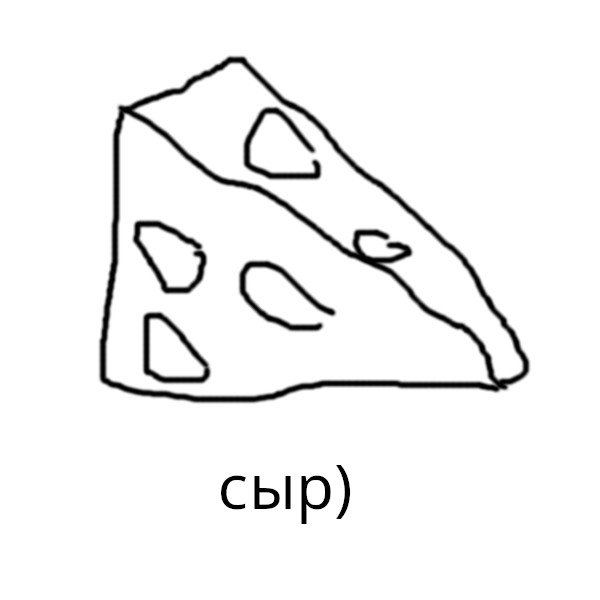

Пармезан (Италия, твёрдый)

Твёрдый выдержанный сыр с ярким солёным и слегка ореховым вкусом. Используется в тёртом виде для пасты, ризотто и салатов.
Популярные сорта из разных стран мира.
Твёрдый выдержанный сыр с ярким солёным и слегка ореховым вкусом. Используется в тёртом виде для пасты, ризотто и салатов.

Нежная кремовая текстура и мягкий сливочный вкус с лёгкой грибной ноткой. Подаётся с багетом, фруктами и белым вином.

Сыр с голубой плесенью и острым, пикантным вкусом. Добавляют в салаты и соусы, подают к вину.

Молодой сыр с мягкой эластичной текстурой и нейтральным молочным вкусом. Идеален для пиццы и салата капрезе.

Волокнистый рассольный сыр, часто копчёный. Имеет солёный вкус и плотную структуру. Хорош как закуска к пиву.
Плотная структура, низкая влажность, длительная выдержка. Примеры: пармезан, чеддер, гауда.
Покрыты белой корочкой, внутри — кремовая масса. Примеры: камамбер, бри.
Содержат прожилки голубой плесени, острый вкус. Примеры: рокфор, дорблю, горгонзола.
Хранятся в солевом растворе, мягкая текстура и солёный вкус. Примеры: брынза, сулугуни, чечил, моцарелла.